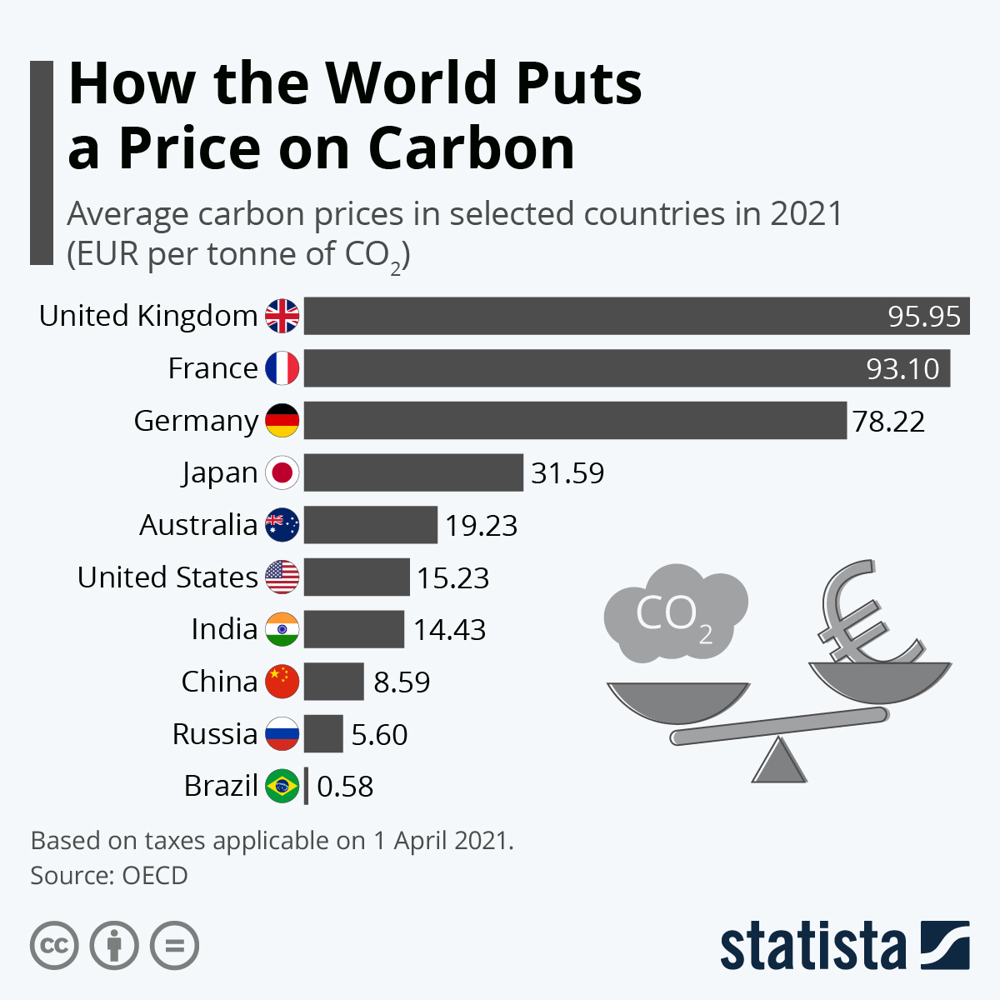

There are large, scaleable, mitigation measures for climate change like carbon farming, carbon tax, and so on. However, some argue that these solutions are being hindered by societal and economic factors. Take Jonathan Park for example, an author from Columbia University, who argues that certain aspects of Capitalism help to worsen this problem in his paper Climate Change and Capitalism. For instance, Park analyzes the cost-benefit consumer model that is one of the fundamentals of Capitalism which states that, in an ideal world, people weigh the cost of something against the benefit that it would bring. Park argues that this cost-benefit analysis makes environmental policy very difficult to implement because there isn’t direct monetary value to climate change. This is because to weigh the benefits of regulation against the costs, one would need to know the monetary value of preventing the extinction of species, preserving many different ecosystems, avoiding all manner of serious health impacts, and even saving human lives. Without such numbers, cost-benefit analysis cannot be conducted (Park 6). Park argues that because fossil fuels are extremely cheap, people don’t put as much thought into more expensive alternative forms of energy because they don’t see a monetary benefit. Your average consumer won’t, and can’t, go to the gas station and calculate the long term monetary costs of filling up their sedan. Furthermore, because it is difficult to see a monetary benefit of using sustainable energy, it can make policy making more difficult.

Park uses Australia’s Carbon Tax, which was implemented in 2012 but repealed in 2014 as an example. Park argues that Australia's initiative, which would lower emissions, failed “because the economic cost outweighed the perceived environmental benefits” (Park 6). The Australian Prime Minister cited the Institute for Energy Research which outlined the costs, including a $4.38 billion loss on the part of the government, as a reason for repealing the policy. Simply put, in the short time that Australia had this policy, there was little monetary or material benefit to the policies, largely because the tax was targeted at .02% of businesses, which caused negative views on the policy as a mitigating solution. The .02% of businesses was too small of a target to reveal any significant environmental or economic benefits of the tax while it cost the government a very large amount of money. Park believes that Capitalism inherently worsens climate change and simply limits our ability to create and implement sustainable solutions.
However, while Park’s analysis of the cost-benefit model as a hindrance on climate change solutions could fit correctly with your average consumer, this same cost-benefit model may actually help as we look at large corporations who are responsible for the majority of greenhouse gas emissions. Furthermore, his assumption that the Carbon Tax does not work, simply because it failed in Australia, is also false. Large corporations and businesses inherently weigh the cost and benefit of their economic decisions more thoroughly than an average person in order to maximize their potential profits. According to recent studies, 71% of greenhouse gas emissions since 1988 can be traced back to 100 of these large corporations like ExxonMobil or Chevron (Riley 1). Companies choose to use fossil fuels because they’re substantially cheaper than sustainable alternatives.

This is where a carbon tax would actually help. In Park’s example, he outlined how Australia’s policy was repealed, but failed to highlight how the small number of companies that were taxed was actually the problem. Australia’s policy only targeted .02% of the nations corporations which didn’t create a large enough effect as it related to the cost the government had to bear and is the reason the policy was repealed. On the other hand, if we look at Britain's carbon tax, we can see how 23% of their emissions are covered by the carbon tax, which has helped the nation fall to their lowest emission levels since 1890 (Plumer et al). The carbon tax helped to encourage corporations to switch away from coal fueled utilities to more sustainable forms of energy. But won’t the carbon tax have a negative impact on consumers and keep them from affording energy prices? In some ways yes, gas prices will rise which would hopefully cause some consumers to switch to other forms of transportation, but in Canada, the money the government raised from their carbon tax was put towards refunding a portion of the citizens taxes. This was estimated to help cover around 70% of the rising gas prices that came as an effect of the Carbon Tax. Along with that, citizens receive the dividends from the Carbon Tax no matter how large their carbon footprint is. This creates an incentive for consumers to switch to more sustainable forms of energy, which puts more money from the government straight into their pockets. For instance, if a consumer wants to buy a new car but the gas prices have risen, they may choose an electric vehicle or one that is more efficient in order to keep a larger portion of the dividend (Plumer et al).
Essentially, the general focus of this dividend would be to prevent companies from being able to effectively pass costs onto their customers which is one of the major fears of the Carbon Tax. In theory, if a government puts a Carbon Tax into place, there would be little to prevent companies from passing the cost of the Tax to their customers. This is especially relevant in areas of the economy where demand is inflexible, such as with power as people often don’t have a choice about where they get electricity from. Simply put, the fear is that this would drive up the cost of basic necessities for average consumers, making things like fuel and electricity unaffordable. However, while the reality is that companies would likely pass costs onto their customers when they could, it is a short term solution for corporations and something like the system of paying dividends to consumers would help to bear the cost. The dividend would also allow companies that adopt more sustainable forms of production or adopt entirely new sustainable products to undercut corporations who continue using Carbon (Moseman). Lastly, solutions to climate change commonly need the policymaking available in these Capitalist economies. This argument largely supports methods like Carbon Tax, but also focuses around incentivizing people to adopt sustainable practices through policymaking. For instance, the global agriculture industry already receives around 700 billion dollars per year in subsidies, of which only around 1% goes to environmentally friendly agricultural practices (Toensmeier 233). Farming corporations tend to use unsustainable methods because of the cost of employing climate friendly practices. But Governments could help to level the playing field for people like farmers by providing payment or environmental services, potentially in the form of the massive amount of subsidies already provided. Simply put, while there is an argument showing Capitalism to be counterproductive in mitigating climate change on the consumer level, large corporations who emit the most carbon are the one’s susceptible to change because of this cost-benefit analysis. We need to hold these corporations accountable, or at the very least, provide them with viable alternatives and make fossil fuels less appealing in order to save the fragile mountain systems that are the victims of climate change.

Unfortunately, the reality is that it would be very difficult for countries like America to implement any sort of carbon policy despite the plausibility of any solution, even a Carbon Tax. This is because of the excessiveness of lobbying on the part of oil and gas companies which hinders the ability of climate policy to be passed. By definition, lobbying is when a person or persons seeks to influence a politician or public official on an issue. In theory, lobbying could be beneficial as organizations like the Citizens Climate Lobby (CCL) push for climate revolution through our democracy by working with congressmen and promoting climate activism. But, the reality is that the lobbying power of organizations like CCL pales in comparison to lobbying power held by huge corporations who have interests against climate policies. For instance, the overall budget for 2023 of the CCL which includes costs other than direct lobbying is 1.77 million dollars (“Citizens’ Climate Financial Information”). This number pales in comparison to the 7.74 million dollars that Exxon Mobil alone spent solely on lobbying in 2022. Furthermore, this 7.74 million only makes up six percent of the $125,046,364 spent by the entire oil and gas industry in lobbying 203 different public officials in 2022 (“Oil & Gas Lobbying Profile”). Simply put, lobbying in the United States is detrimental because of the huge monetary power held by oil and gas companies. They have enormous influence over climate policy and are known to push against moves for carbon pricing and sustainable forms of energy. However, while this is the sad reality of current day politics, it would be wrong to say that this means climate solutions are impossible to achieve. Rather, it is to put in perspective the challenges we will face as the world pushes for change. There are ways to combat lobbying on the part of large corporations. For instance, many lobbying claims are wildly exaggerated, and readily refuted by economic modeling. This is where counter-lobbying by communicating the exaggerated reports to a wider audience could prove helpful (Pezzey 330). If it reaches enough individuals, they in turn could put pressure on policymakers to go against lobbyists. Of course, this would take a massive, global push that would require tireless and rapid media repetition. But it is a push that is necessary. Large corporations have so much influence because their interests are focused and take advantage of the environmental interests of the population which span hundreds of countries, many generations, and billions of consumers. So, while it is a far-fetched hope, a globalized push against the interests of lobbyists would take away their power as their funds pale in comparison to the scale of even just a unified fraction of America.